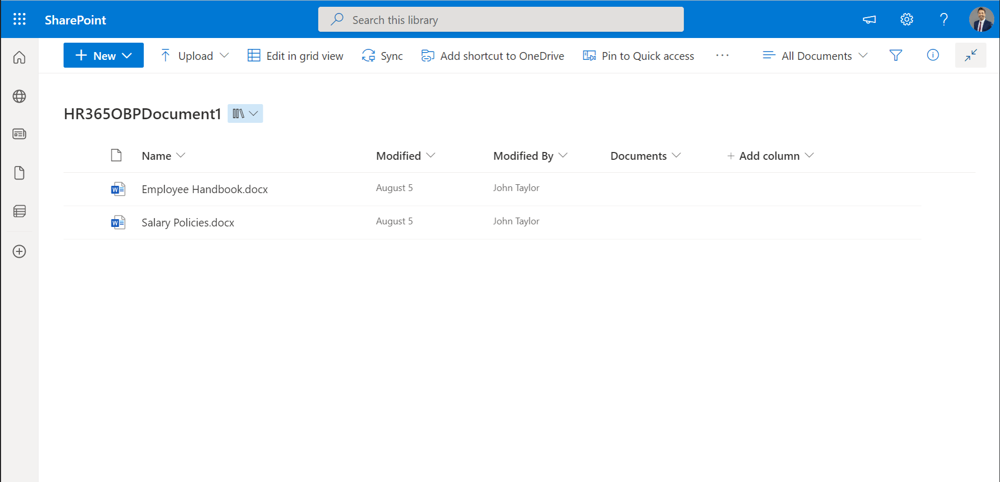
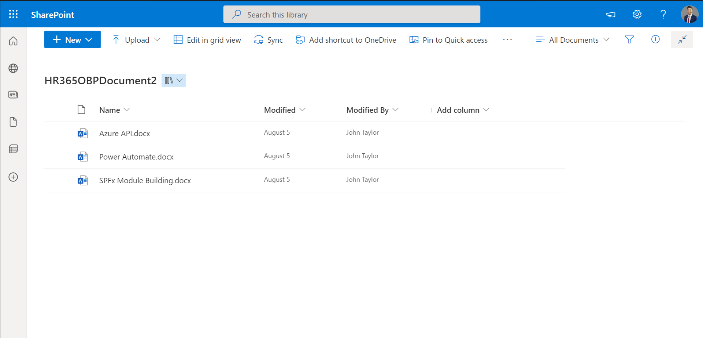

Setup of the Application
- Setup the date format, add HR , IT and admin team members from side navigation panel.
- Organizations and Office Location:
Here you can add your organization details and various branch location. We recommend you add present office location even if there are no other branches.
Please click on organization under organizations from side navigation panel, click on Add tab, fill details, and click on Save button. Then add locations from same page. - Add departments, roles, grades, and cost centers as per your requirement from side navigation.
Here is an example to add a department. Please click on the department from side navigation panel, Department page will display, click on Add tab, type departments, and click on Save & Add more button for multiple (up to 10 items) or just click on save button as shown in below image.
Before moving to start pre joining process of employee, please setup the Onboarding application.
Please follow the same way to add roles, grades, and cost center. (Grades are role dependent so please add roles before grades).
Add User
- Admin: Admin has full control in application.
- HR: HR can do Onboarding Process.
- User: User can use only employee self-service portal.
- No Access: User can access application with this role.
You can add existing users from O365 to this portal.
Roles
Add: To use this application, user's needs to be added in the application according to their roles, please click on Add users under Users from side navigation panel or User section of the home page, add user page will display, please type 3 words in employee name field and pick the user and click outside, all data will binds automatic into respective field, select their role and click finally click on save button as shown in below image. If any record is not available in O365, you can add from here.
Edit: If you want edit details of the user you can edit from Edit User option.
Archive: You can see all users present in archive along with their status. If you archive users, those users will not be excluded from Existing Employees.
Disable: If you disable the employee, he cannot access the application. You can disable for disable user option under users’ section of home page or from side navigation panel.
Uploading Documents(Company Policies & Training Documents)
There are two document libraries in site content of your SharePoint site where Onboarding application deployed those are generated automatically during installation of the application those are HR365OBPDocument1, HR365OBPDocument2.
Here HR365OBPDocument1, HR365OBPDocument2 are meant to upload documents.
Please upload documents related to Company Policies in HR365OBPDocument1 library and training related documents in HR365OBPDocument2 as show in below images.

The uploaded documents will display in Companies Policies and Training Documents tables of employee self-service portal as shown in below image.
https://contoso.sharepoint.com/sites/Sitename/OBP/Pages/ESS.aspx
You can be able to rename the table from advance setting from side navigation panel under system setting.
Add Custom field
- Add
- If you select column category as HR365OBPEmployeeOnboardingProcess, custom field will create for pre joining process page from where HR executive can add details during requesting pre joining.
- If you select column category as HR365OBPEmployeeDetails, custom field will create for pre joining process page from where new joinee candidate can add their details and submit from employee self-service portal.
- In Field location column there are three options like Employee details, Work details and confidential details. If you select any one of field location, custom field display in that tab in update detail page of employee self-service page.
Delete
Select the check box of custom field and click on Delete button.Edit
You can edit only custom field name, just select check box of custom field and click on Edit button, edit popup page will display change name in onboarding property Plus column in order to change custom field name and click on Submit button.Display Status
Custom fields can be hide or display by disabling or enabling toggle switch in display status column.
Here you can add custom field for Pre joining page and update details page (for employee details, employee confidential details and work details sections) of Employee Self Service Portal as shown in below image.
Pre-joining process Page: HR executive can add details in custom field during pre-joining request
Update details panel (of Employee self-service portal): New Joinee can fill details in custom field and submit.
Click on Add Custom Fields under system setting from navigation panels, page will display and click on Add Tab Add custom filed page will open. Now type the name in Onboarding Plus Property Name, select “Property Column Type”, select column category and select field location and finally click on submit button (to add multiple custom fields, click of add more button and then click on submit button) as shown in below image.
Note:
Azure API Configuration for MS Team
You can configure azure API from below URL
https://www.hr365.us/wp-content/uploads/2021/09/Azure-API-Configuration-for-Employee-Onboarding.pdf
This help in adding users in MS Teams from HR Check list panel in Joining process
Document Setting
Form this setting you can add different documents name which users would have to submit from employee self-service portal. Click on document settings from side navigation panel, add document panel will open from where you can add documents.
Those added documents will display in user check list panel of employee service portal from where employee can upload and submits documents as shown in below.
Advance Setting
You can add HR Manager for Pre joining request approval in HR team. Add IT members and admin for notification about assigning resources accordingly. From Advance settings you can also add in CC of HR Manager, IT team and admin facility teams emails notifications
Probation period: In advance setting we can add probation period in days. This will send notification reminder to HR team before the completion of probation period of candidates.
Note: This works on Power Automate Setup